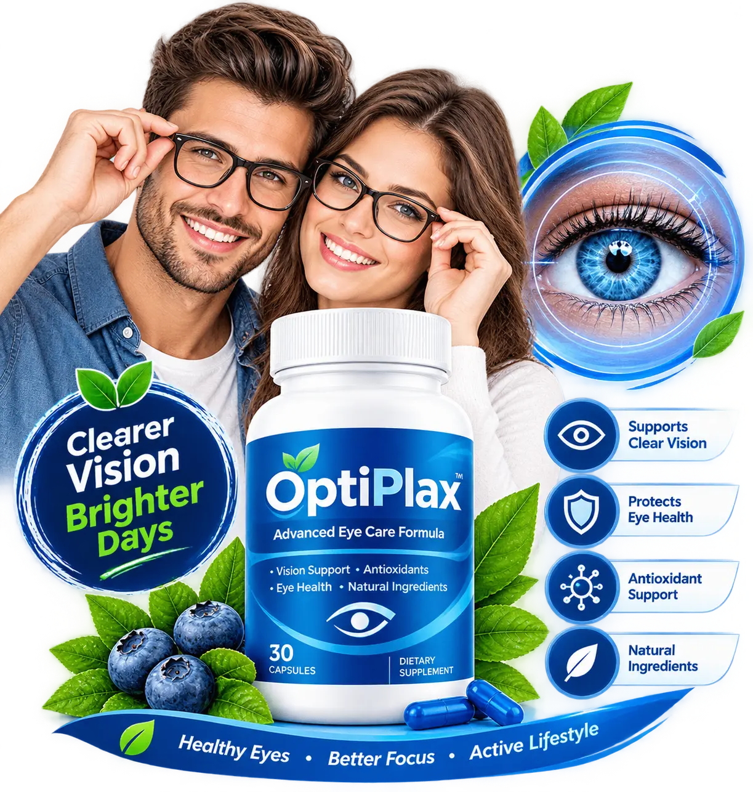

We'd rather point you to the real label than guess at specifics that can change between batches.
OptiPlax is formulated as a daily, naturally-inspired capsule positioned around eye wellness, visual comfort and antioxidant nutrition. Formulas, sourcing and serving sizes can be refined over time, which is why the current Supplement Facts panel on your bottle is always the most accurate source — more accurate than this page, a marketplace listing, or anything else written about the product online.
What we can describe is the category OptiPlax is formulated in: a naturally-inspired, antioxidant-forward daily capsule, built for adults who want a simple way to include eye-focused nutrition in a broader wellness routine. For general background on why antioxidants come up so often in eye-health conversations, see why antioxidants matter for long-term eye health, and for food-based approaches see eye-friendly nutrition.
| Form | Capsule |
|---|---|
| Bottle Size | 30 capsules |
| Formula Direction | Naturally-inspired, antioxidant-forward |
| Facility | FDA-registered, GMP-certified (USA) |

See package options and the current guarantee.
Review the current formula, package options and guarantee, then decide if OptiPlax fits your everyday routine.
Check Current Offer